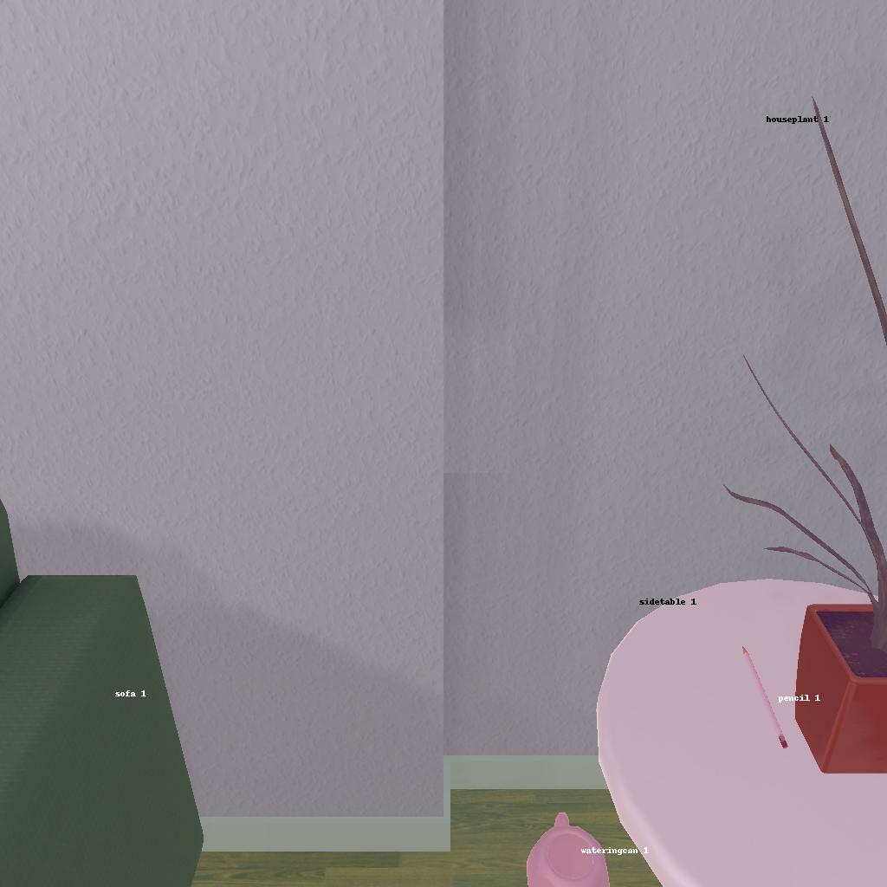

---------------------------------------------------------task: 5---------------------------------------------------------
--------------------------------------------------------------------------------------------------------------------------------------------------------------------
--------------------------------------------------------------------------------------------------------------------------------------------------------------------
Step:--------------------------------------------------------------------------5-------------------------------------------------------------------------------
----------------------------------------
VLM Prompt:
Image1:
Image2:
Image3:
**Instruction**
1. Analyze the provided image to identify all visible household objects, focusing on those relevant to the task description "put some book on armchair."
2. Use the analysis of the image and the task hint "The agent must find an object of the desired type, pick it up, find the correct location to place it, and put it down there." to answer the question: what is the most reasonable action in the choices for the task description "put some book on armchair"?
4. Decide and write the answer using the template: The answer is: (i): , where i is the real number. If there is no desired object in the image, search every place based on **Initial Observation** to find the object. And if no one is exactly correct, choose a similar answer.
**Initial Observation**
You are in the middle of a room. Looking quickly around you, you can see armchair (1), sofa (1), coffeetable (1), drawer (1-4), sidetable (1-3), dresser (1)
**Answer Choices**
(1): go to armchair 1
(2): go to sofa 1
(3): go to coffeetable 1
(4): go to dresser 1
(5): go to drawer 2
(6): go to drawer 3
(7): go to drawer 4
(8): go to sidetable 2
(9): go to sidetable 3
(10): open drawer 1
(11): close drawer 1
(12): take houseplant 1 from drawer 1
(13): take television 1 from drawer 1
(14): take box 1 from drawer 1
(15): take book 1 from drawer 1
(16): take wateringcan 1 from drawer 1
(17): take keychain 1 from drawer 1
(18): take pencil 1 from drawer 1
(19): take pencil 2 from drawer 1
**Answer**
Let's think step by step by following the instructions.
----------------------------------------
----------------------------------------
Original Response:
The task is to "put some book on armchair." From the initial observation, the relevant objects to search for a book would be the drawer, dresser, and sidetable, as these are typical storage places for books. Analyzing the image, there is no visible book on the armchair, sofa, coffee table, or the visible sidetable. Therefore, the most reasonable action would be to search the places where a book is likely to be found.
Since the task description does not specify which drawer to check first, we should start with the first one in the list provided by the initial observation, which is drawer 1.
The answer is: (10): open drawer 1.
----------------------------------------
----------------------------------------
>>> Refine Original VLM Response and Get Pure Action: open drawer 1
----------------------------------------
-----------------------------------------------------------------
Running time: 9.484758853912354 seconds
Total Money: 2.5501599999999995
-----------------------------------------------------------------
-----------------------------------------------------------------
Text Observation:Nothing happens.
-----------------------------------------------------------------
UNSUCCEED